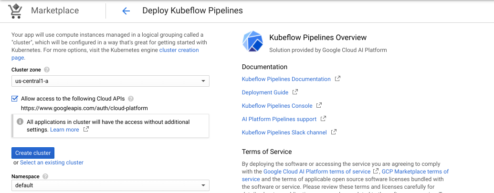

In this lab, you will build, deploy, and run a KFP pipeline that orchestrates Cloud AI Platform services to train, tune, and deploy a scikit-learn model.
What you'll need
To complete this lab, you need:
If you don't have a GCP Project, follow these steps to create a new GCP Project.
This codelab is focused on AI Platform Notebooks. Non-relevant concepts and code blocks are glossed over and are provided for you to simply copy and paste.
Navigate to AI Platform Pipelines section of your Cloud Console and click New Instance.
Then click CONFIGURE on the Kubeflow Pipelines page.
Select the zone.
Check Allow access to the following Cloud APIs, leave the name as is, and then click Create Cluster.

This will create a Google Kubernetes Engine cluster in your specified zone. This should take 2-3 minutes to complete. Wait for the cluster to finish before proceeding to the next step.
When the cluster creation is complete, do the following:
Leave other settings unchanged, and then click Deploy. You will see the individual services of KFP deployed to your GKE cluster.
The workflow implemented by the pipeline is defined using a Python based Domain Specific Language (DSL). The pipeline's DSL is in the amyris_pipeline.py file that we will generate below.
The pipeline's DSL has been designed to avoid hardcoding any environment specific settings like file paths or connection strings. These settings are provided to the pipeline code through a set of environment variables.
The pipeline uses a mix of custom and pre-build components.
Continue using the AI Platform notebook used in earlier labs. Next, create the train, validation and test files using AI Platform notebooks for this lab. Now, create folders for pipeline set up.
PIPELINE_FOLDER = 'pipeline'
os.makedirs(PIPELINE_FOLDER, exist_ok=True)data = pd.read_excel(INPUT_FILE,sheet_name='data')
meta_data = pd.read_excel(INPUT_FILE, sheet_name='meta data')
numeric_vars = ((data.dtypes == 'float64') | (data.dtypes == 'int64')) & (meta_data['variable type'] == 'independent').values
numeric_x_data = data[data.columns[numeric_vars]]
model_target = 'Run_Performance'
y_data = data[[model_target]]
meta_data = meta_data.set_index('name')
#maintain class balance
X_train, X_test, y_train, y_test = train_test_split(numeric_x_data, y_data, test_size=0.25, stratify = y_data[model_target], random_state=42)
#split train set to create a pseudo test or validation dataset
X_train, X_validate, y_train, y_validate = train_test_split(X_train, y_train, test_size=0.33, stratify= y_train[model_target], random_state=42)
testData =X_test.join(y_test)
DATA_TEST_ROOT='{}/data/testing'.format(ARTIFACT_STORE)
input_file_csv = 'test_amyris'
cmd = "testData.to_csv('{}/{}.csv', index=False)".format(DATA_TEST_ROOT, input_file_csv)
eval(cmd)
Please make sure that the value of TESTING_FILE_PATH is set as follows
TESTING_FILE_PATH= '{}/{}/{}'.format(DATA_ROOT, 'testing', 'test_amyris.csv')The following code creates a pipeline and stitches together the different components together to create a DAG.
%%writefile ./pipeline/amyris_pipeline.py
# Copyright 2019 Google LLC
#
# Licensed under the Apache License, Version 2.0 (the "License");
# you may not use this file except in compliance with the License.
# You may obtain a copy of the License at
#
# http://www.apache.org/licenses/LICENSE-2.0
#
# Unless required by applicable law or agreed to in writing, software
# distributed under the License is distributed on an "AS IS" BASIS,
# WITHOUT WARRANTIES OR CONDITIONS OF ANY KIND, either express or implied.
# See the License for the specific language governing permissions and
# limitations under the License.
"""KFP pipeline orchestrating Cloud AI Platform services."""
import os
from helper_components import evaluate_model
from helper_components import retrieve_best_run
from jinja2 import Template
import kfp
from kfp.components import func_to_container_op
from kfp.dsl.types import Dict
from kfp.dsl.types import GCPProjectID
from kfp.dsl.types import GCPRegion
from kfp.dsl.types import GCSPath
from kfp.dsl.types import String
from kfp.gcp import use_gcp_secret
# Defaults and environment settings
BASE_IMAGE = os.getenv('BASE_IMAGE')
TRAINER_IMAGE = os.getenv('TRAINER_IMAGE')
RUNTIME_VERSION = os.getenv('RUNTIME_VERSION')
PYTHON_VERSION = os.getenv('PYTHON_VERSION')
COMPONENT_URL_SEARCH_PREFIX = os.getenv('COMPONENT_URL_SEARCH_PREFIX')
USE_KFP_SA = os.getenv('USE_KFP_SA')
INPUT_FILE = '<..../Anonymized_Fermentation_Data_final.xlsx>'
TESTING_FILE_PATH = '<.../data/testing/test_amyris.csv>'
HYPERTUNE_SETTINGS = """
{
"hyperparameters": {
"goal": "MAXIMIZE",
"maxTrials": 3,
"maxParallelTrials": 3,
"hyperparameterMetricTag": "accuracy",
"enableTrialEarlyStopping": True,
"algorithm": "RANDOM_SEARCH",
"params": [
{
"parameterName": "n_estimators",
"type": "INTEGER",
"minValue": 10,
"maxValue": 200,
"scaleType": "UNIT_LINEAR_SCALE"
},
{
"parameterName": "max_leaf_nodes",
"type": "INTEGER",
"minValue": 10,
"maxValue": 500,
"scaleType": "UNIT_LINEAR_SCALE"
},
{
"parameterName": "max_depth",
"type": "INTEGER",
"minValue": 3,
"maxValue": 20,
"scaleType": "UNIT_LINEAR_SCALE"
},
{
"parameterName": "min_samples_split",
"type": "DISCRETE",
"discreteValues": [2,5,10]
},
{
"parameterName": "max_features",
"type": "DOUBLE",
"minValue": 0.5,
"maxValue": 1.0,
"scaleType": "UNIT_LINEAR_SCALE"
},
{
"parameterName": "class_weight",
"type": "CATEGORICAL",
"categoricalValues": [ "balanced", "balanced_subsample"]
},
{
"parameterName": "bootstrap",
"type": "CATEGORICAL",
"categoricalValues": [ "TRUE", "FALSE"]
}
]
}
}
"""
# Create component factories
component_store = kfp.components.ComponentStore(
local_search_paths=None, url_search_prefixes=[COMPONENT_URL_SEARCH_PREFIX])
mlengine_train_op = component_store.load_component('ml_engine/train')
mlengine_deploy_op = component_store.load_component('ml_engine/deploy')
retrieve_best_run_op = func_to_container_op(
retrieve_best_run, base_image=BASE_IMAGE)
evaluate_model_op = func_to_container_op(evaluate_model, base_image=BASE_IMAGE)
@kfp.dsl.pipeline(
name='Amyris Classifier Training',
description='The pipeline training and deploying the Amyris classifierpipeline_yaml'
)
def amyris_train(project_id,
region,
gcs_root,
evaluation_metric_name,
evaluation_metric_threshold,
model_id,
version_id,
replace_existing_version,
hypertune_settings=HYPERTUNE_SETTINGS,
dataset_location='US'):
"""Orchestrates training and deployment of an sklearn model."""
# Tune hyperparameters
tune_args = [
'--training_dataset_path',INPUT_FILE,
'--hptune', 'True'
]
job_dir = '{}/{}/{}'.format(gcs_root, 'jobdir/hypertune',
kfp.dsl.RUN_ID_PLACEHOLDER)
hypertune = mlengine_train_op(
project_id=project_id,
region=region,
master_image_uri=TRAINER_IMAGE,
job_dir=job_dir,
args=tune_args,
training_input=hypertune_settings)
# Retrieve the best trial
get_best_trial = retrieve_best_run_op(
project_id, hypertune.outputs['job_id'])
# Train the model on a combined training and validation datasets
job_dir = '{}/{}/{}'.format(gcs_root, 'jobdir', kfp.dsl.RUN_ID_PLACEHOLDER)
train_args = [
'--training_dataset_path',INPUT_FILE,
'--n_estimators',get_best_trial.outputs['n_estimators'],
'--max_leaf_nodes',get_best_trial.outputs['max_leaf_nodes'],
'--max_depth',get_best_trial.outputs['max_depth'],
'--min_samples_split',get_best_trial.outputs['min_samples_split'],
'--max_features',get_best_trial.outputs['max_features'],
'--class_weight',get_best_trial.outputs['class_weight'],
'--bootstrap',get_best_trial.outputs['bootstrap'],
'--hptune', 'False'
]
train_model = mlengine_train_op(
project_id=project_id,
region=region,
master_image_uri=TRAINER_IMAGE,
job_dir=job_dir,
args=train_args)
# Evaluate the model on the testing split
eval_model = evaluate_model_op(
dataset_path=TESTING_FILE_PATH,
model_path=str(train_model.outputs['job_dir']),
metric_name=evaluation_metric_name)
# Deploy the model if the primary metric is better than threshold
with kfp.dsl.Condition(eval_model.outputs['metric_value'] > evaluation_metric_threshold):
deploy_model = mlengine_deploy_op(
model_uri=train_model.outputs['job_dir'],
project_id=project_id,
model_id=model_id,
version_id=version_id,
runtime_version=RUNTIME_VERSION,
python_version=PYTHON_VERSION,
replace_existing_version=replace_existing_version)
# Configure the pipeline to run using the service account defined
# in the user-gcp-sa k8s secret
if USE_KFP_SA == 'True':
kfp.dsl.get_pipeline_conf().add_op_transformer(
use_gcp_secret('user-gcp-sa')) Copy helper_components.py. This file has some custom helper functions. Notice that we wrapped these functions into a Docker container using the func_to_container_op in the
amyris_training.py file above.
%%writefile ./pipeline/helper_components.py
# Copyright 2019 Google LLC
#
# Licensed under the Apache License, Version 2.0 (the "License");
# you may not use this file except in compliance with the License.
# You may obtain a copy of the License at
#
# http://www.apache.org/licenses/LICENSE-2.0
#
# Unless required by applicable law or agreed to in writing, software
# distributed under the License is distributed on an "AS IS" BASIS,
# WITHOUT WARRANTIES OR CONDITIONS OF ANY KIND, either express or implied.
# See the License for the specific language governing permissions and
"""Helper components."""
from typing import NamedTuple
def retrieve_best_run(project_id: str, job_id: str) -> NamedTuple('Outputs', [('metric_value', float), ('n_estimators', int),
('max_leaf_nodes', int), ('max_depth', int), ('min_samples_split', int),
('max_features', float), ('class_weight', str), ('bootstrap', str)]):
"""Retrieves the parameters of the best Hypertune run."""
from googleapiclient import discovery
from googleapiclient import errors
ml = discovery.build('ml', 'v1')
job_name = 'projects/{}/jobs/{}'.format(project_id, job_id)
request = ml.projects().jobs().get(name=job_name)
try:
response = request.execute()
except errors.HttpError as err:
print(err)
except:
print('Unexpected error')
print(response)
best_trial = response['trainingOutput']['trials'][0]
metric_value = best_trial['finalMetric']['objectiveValue']
n_estimators = int(best_trial['hyperparameters']['n_estimators'])
max_leaf_nodes = int(best_trial['hyperparameters']['max_leaf_nodes'])
max_depth = int(best_trial['hyperparameters']['max_depth'])
min_samples_split = int(best_trial['hyperparameters']['min_samples_split'])
max_features = float(best_trial['hyperparameters']['max_features'])
class_weight = best_trial['hyperparameters']['class_weight']
bootstrap = best_trial['hyperparameters']['bootstrap']
return (metric_value, n_estimators, max_leaf_nodes, max_depth, min_samples_split, max_features, class_weight, bootstrap )
def evaluate_model(dataset_path: str, model_path: str, metric_name: str) -> NamedTuple('Outputs', [('metric_name', str), ('metric_value', float),
('mlpipeline_metrics', 'Metrics')]):
"""Evaluates a trained sklearn model."""
import pickle
import json
import pandas as pd
import subprocess
import sys
from sklearn.metrics import accuracy_score, recall_score
df_test = pd.read_csv(dataset_path)
X_test = df_test.drop('Run_Performance', axis=1)
y_test = df_test['Run_Performance']
# Copy the model from GCS
model_filename = 'model.pkl'
gcs_model_filepath = '{}/{}'.format(model_path, model_filename)
print(gcs_model_filepath)
subprocess.check_call(['gsutil', 'cp', gcs_model_filepath, model_filename],
stderr=sys.stdout)
with open(model_filename, 'rb') as model_file:
model = pickle.load(model_file)
y_hat = model.predict(X_test)
if metric_name == 'accuracy':
metric_value = accuracy_score(y_test, y_hat)
elif metric_name == 'recall':
metric_value = recall_score(y_test, y_hat)
else:
metric_name = 'N/A'
metric_value = 0
# Export the metric
metrics = {
'metrics': [{
'name': metric_name,
'numberValue': float(metric_value)
}]
}
return (metric_name, metric_value, json.dumps(metrics))Create a folder named base_image
BASE_IMAGE_FOLDER = 'base_image'
os.makedirs(BASE_IMAGE_FOLDER, exist_ok=True)Write the Dockerfile as follows:
%%writefile ./$BASE_IMAGE_FOLDER/Dockerfile
FROM gcr.io/deeplearning-platform-release/base-cpu
RUN pip install -U fire scikit-learn==0.20.4 pandas==0.24.2 kfp==0.2.5IMAGE_NAME='base_image'
TAG='latest'
BASE_IMAGE='gcr.io/{}/{}:{}'.format(PROJECT_ID, IMAGE_NAME, TAG)!gcloud builds submit --timeout 15m --tag $BASE_IMAGE base_imageBefore deploying to AI Platform Pipelines, the pipeline DSL has to be compiled into a pipeline runtime format, also referred to as a pipeline package. The runtime format is based on Argo Workflow, which is expressed in YAML.
Update the below constants with the settings reflecting your lab environment.
Open the SETTINGS for your instance
REGION = '<your selected region>'
ENDPOINT = 'xxxxxxxx-dot-us-central2.pipelines.googleusercontent.com'
PROJECT_ID = !(gcloud config get-value core/project)
PROJECT_ID = PROJECT_ID[0]You can compile the DSL using an API from the KFP SDK or using the KFP compiler.
To compile the pipeline DSL using the KFP compiler, set the pipeline's compile time settings:
The pipeline can run using a security context of the GKE default node pool's service account or the service account defined in the user-gcp-sa secret of the Kubernetes namespace hosting Kubeflow Pipelines. If you want to use the user-gcp-sa service account you change the value of USE_KFP_SA to True.
Note that the default AI Platform Pipelines configuration does not define the user-gcp-sa secret.
USE_KFP_SA = False
COMPONENT_URL_SEARCH_PREFIX = 'https://raw.githubusercontent.com/kubeflow/pipelines/0.2.5/components/gcp/'
RUNTIME_VERSION = '1.15'
PYTHON_VERSION = '3.7'
%env USE_KFP_SA={USE_KFP_SA}
%env BASE_IMAGE={BASE_IMAGE}
%env TRAINER_IMAGE={TRAINER_IMAGE}
%env COMPONENT_URL_SEARCH_PREFIX={COMPONENT_URL_SEARCH_PREFIX}
%env RUNTIME_VERSION={RUNTIME_VERSION}
%env PYTHON_VERSION={PYTHON_VERSION}
%env INPUT_FILE={INPUT_FILE}
%env TESTING_FILE_PATH={TESTING_FILE_PATH}Now that we have built and pushed all the pre-reqs containers, we can compile the KF pipeline into a yaml file using the `dsl-compile` command and referencing the python file containing the pipeline description as command line argument.
!dsl-compile --py pipeline/amyris_pipeline.py --output amyris_pipeline.yaml!head amyris_pipeline.yaml Once the pipeline has been compiled into its yaml description, we can upload it to the cluster using the kfp command.
PIPELINE_NAME='<pipeline_name>'
!kfp --endpoint $ENDPOINT pipeline upload \
-p $PIPELINE_NAME \
amyris_pipeline.yamlAnd verify that it has been correctly uploaded.
!kfp --endpoint $ENDPOINT pipeline listSet your pipeline id accordingly.
PIPELINE_ID='<pipeline ID retrieved from above>'EXPERIMENT_NAME = 'Amyris_Experiment'
RUN_ID = 'Run_001'
EVALUATION_METRIC = 'accuracy'
EVALUATION_METRIC_THRESHOLD = '0.69'
MODEL_ID = '<model name>'
VERSION_ID = '<version no.>'
REPLACE_EXISTING_VERSION = 'True'
GCS_STAGING_PATH = '{}/staging'.format(ARTIFACT_STORE)where
!kfp --endpoint $ENDPOINT run submit \
-e $EXPERIMENT_NAME \
-r $RUN_ID \
-p $PIPELINE_ID \
project_id=$PROJECT_ID \
gcs_root=$GCS_STAGING_PATH \
region=$REGION \
evaluation_metric_name=$EVALUATION_METRIC \
evaluation_metric_threshold=$EVALUATION_METRIC_THRESHOLD \
model_id=$MODEL_ID \
version_id=$VERSION_ID \
replace_existing_version=$REPLACE_EXISTING_VERSIONTwo or more runs can be compared to find out how they differ in terms of configuration parameters, final value of evaluation metric etc. In order to compare runs, select 2 or more runs and click Compare Runs in the PIpelines dashboard.
Click on Artifacts in the left panel on the Pipelines Dashboard. Here, all the artifacts of a pipeline runs are listed.
Click on each component in the Pipeline and select the ML Metadata tab.
Note:
ML Metadata is a foundation of TFX. KFP is not yet fully integrated with ML Metadata.
What you see in KFP UI comes from more sources than just ML Metadata. KFP metadata management will be migrated to ML Metadata but it is still work in progress.
If tracking experiments and their associated metadata is very crucial, there are two choices at present.
KFP_CLI_FOLDER = 'kfp-cli'
os.makedirs(KFP_CLI_FOLDER, exist_ok=True)Create a folder named kfp-cli and copy the following Dockerfile.
%%writefile ./kfp-cli/Dockerfile
FROM gcr.io/deeplearning-platform-release/base-cpu
RUN pip install kfp==0.2.5
ENTRYPOINT ["/bin/bash"]Build the image and push it to your project's Container Registry
IMAGE_NAME='kfp-cli'
TAG='latest'
IMAGE_URI='gcr.io/{}/{}:{}'.format(PROJECT_ID, IMAGE_NAME, TAG)!gcloud builds submit --timeout 15m --tag {IMAGE_URI} kfp-cliReview the cloudbuild.yaml file to understand how the CI/CD workflow is implemented and how environment specific settings are abstracted using Cloud Build variables.
The CI/CD workflow automates the steps you walked through manually during lab-02-kfp-pipeline:
Although the KFP backend supports pipeline versioning, this feature has not yet been enabled through the KFP CLI. As a temporary workaround, in the Cloud Build configuration a value of the TAG_NAME variable is appended to the name of the pipeline.
The Cloud Build workflow configuration uses both standard and custom Cloud Build builders. The custom builder encapsulates KFP CLI.
Write the cloudbuild.yaml file.
%%writefile cloudbuild.yaml
# Copyright 2019 Google Inc. All Rights Reserved.
#
# Licensed under the Apache License, Version 2.0 (the "License");
# you may not use this file except in compliance with the License.
# You may obtain a copy of the License at
#
# http://www.apache.org/licenses/LICENSE-2.0
#
# Unless required by applicable law or agreed to in writing, software
# distributed under the License is distributed on an "AS IS" BASIS,
# WITHOUT WARRANTIES OR CONDITIONS OF ANY KIND, either express or implied.
# See the License for the specific language governing permissions and
# limitations under the License.
#
# Submits a Cloud Build job that builds and deploys
# the pipelines and pipelines components
#
# Build and deploy a TFX pipeline. This is an interim solution till tfx CLI fully
# supports automated building and deploying.
#
steps:
# Build the trainer image
- name: 'gcr.io/cloud-builders/docker'
args: ['build', '-t', 'gcr.io/$PROJECT_ID/$_TRAINER_IMAGE_NAME:$TAG_NAME', '.']
dir: $_PIPELINE_FOLDER/train_image
# Build the base image for lightweight components
- name: 'gcr.io/cloud-builders/docker'
args: ['build', '-t', 'gcr.io/$PROJECT_ID/$_BASE_IMAGE_NAME:$TAG_NAME', '.']
dir: $_PIPELINE_FOLDER/base_image
# Compile the pipeline
- name: 'gcr.io/$PROJECT_ID/kfp-cli'
args:
- '-c'
- |
dsl-compile --py $_PIPELINE_DSL --output $_PIPELINE_PACKAGE
env:
- 'BASE_IMAGE=gcr.io/$PROJECT_ID/$_BASE_IMAGE_NAME:$TAG_NAME'
- 'TRAINER_IMAGE=gcr.io/$PROJECT_ID/$_TRAINER_IMAGE_NAME:$TAG_NAME'
- 'RUNTIME_VERSION=$_RUNTIME_VERSION'
- 'PYTHON_VERSION=$_PYTHON_VERSION'
- 'COMPONENT_URL_SEARCH_PREFIX=$_COMPONENT_URL_SEARCH_PREFIX'
- 'USE_KFP_SA=$_USE_KFP_SA'
dir: $_PIPELINE_FOLDER/pipeline
# Upload the pipeline
- name: 'gcr.io/$PROJECT_ID/kfp-cli'
args:
- '-c'
- |
kfp --endpoint $_ENDPOINT pipeline upload -p ${_PIPELINE_NAME}_$TAG_NAME $_PIPELINE_PACKAGE
dir: $_PIPELINE_FOLDER/pipeline
# Push the images to Container Registry
images: ['gcr.io/$PROJECT_ID/$_TRAINER_IMAGE_NAME:$TAG_NAME', 'gcr.io/$PROJECT_ID/$_BASE_IMAGE_NAME:$TAG_NAME']You can manually trigger Cloud Build runs using the gcloud builds submit command.
SUBSTITUTIONS="""
_ENDPOINT={},\
_TRAINER_IMAGE_NAME=trainer_image,\
_BASE_IMAGE_NAME=base_image,\
TAG_NAME=latest,\
_PIPELINE_FOLDER=.,\
_PIPELINE_DSL=amyris_pipeline.py,\
_PIPELINE_PACKAGE=amyris_pipeline.yaml,\
_PIPELINE_NAME=amyris_pipelineFinal,\
_RUNTIME_VERSION=1.15,\
_PYTHON_VERSION=3.7,\
_USE_KFP_SA=True,\
_COMPONENT_URL_SEARCH_PREFIX=https://raw.githubusercontent.com/kubeflow/pipelines/0.2.5/components/gcp/
""".format(ENDPOINT).strip()!gcloud builds submit . --config cloudbuild.yaml --substitutions {SUBSTITUTIONS}When this build finishes, you will see a new pipeline created with the name <_PIPELINE_NAME>_<TAG_NAME>.
You can now create a run by supplying parameters.
In this exercise you integrate your CI/CD workflow with GitHub, using Cloud Build GitHub App. You will set up a trigger that starts the CI/CD workflow when a new tag is applied to the GitHub repo managing the pipeline source code. You will use a fork of this repo as your source GitHub repository.
Connect the fork you created in the previous step to your Google Cloud project and create a trigger following the steps in the Creating GitHub app trigger article. Use the following values on the Edit trigger form:
Use the following values for the substitution variables:
To start an automated build create a new release of the repo in GitHub. Alternatively, you can start the build by applying a tag using git.
>git tag [TAG NAME]
>git push origin --tags
You've done a lot in this lab üëèüëèüëè
To recap, you've learned how to: